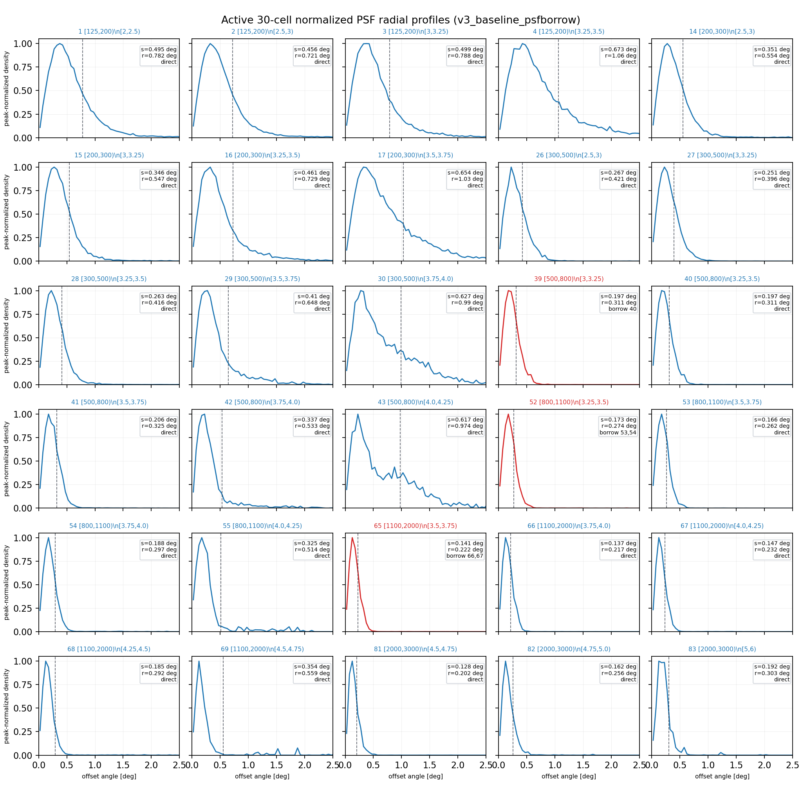
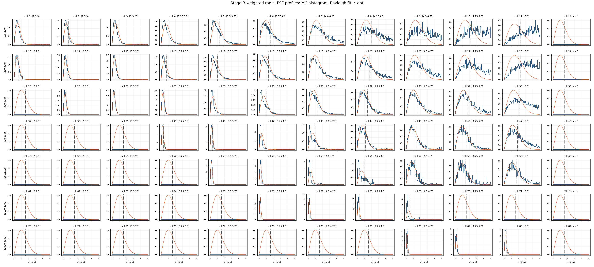
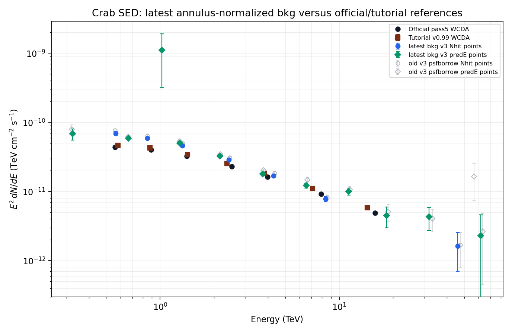

Current Result Summary
N_on 128,987; excess 15599.7
known-background Poisson aggregate; Li-Ma is not defined for direct expectation bkg.
phi0 2.74887e-12, alpha/gamma 2.8511, beta 0.15273; chi2/ndof 105.8/27
Stage D active-fit warnings: 0
Current A-G Inputs
| Stage | current role | run / type | metadata |
|---|---|---|---|
| A | 2D response | primary_thrown_response | apply/output/stage_a_v3_candidate/response_2d_v3_candidate_metadata.json |
| B | PSF with neighbor borrowing | v3_psfborrow_from_nominal | apply/output/stage_b_v3_candidate_psfborrow/runs/v3_psfborrow_from_nominal/psf_v3_candidate_metadata.json |
| C | observation event reduction | v3_stage_c_slurm_42024 | apply/output/stage_c_v3_candidate/runs/v3_stage_c_slurm_42024/obs_events_metadata.json |
| D | annulus-normalized 2D background | v3_stage_d_annnorm_from_psfborrow | apply/output/stage_d_v3_candidate_annnorm/runs/v3_stage_d_annnorm_from_psfborrow/background_v3_candidate_annnorm_metadata.json |
| E | on-region excess from latest bkg | v3_stage_e_annnorm_from_psfborrow | apply/output/stage_e_v3_candidate_annnorm/runs/v3_stage_e_annnorm_from_psfborrow/signal_v3_candidate_annnorm_metadata.json |
| F | global forward-folding fit | v3_stage_f_annnorm_from_psfborrow | apply/output/stage_f_v3_baseline_annnorm/runs/v3_stage_f_annnorm_from_psfborrow/fit_v3_baseline_annnorm_metadata.json |
| G | diagnostic SED points | v3_stage_g_annnorm_from_psfborrow | apply/output/stage_g_v3_baseline_annnorm/runs/v3_stage_g_annnorm_from_psfborrow/sed_points_v3_baseline_annnorm_metadata.json |
The diagnostic summary asset is retained for provenance at apply/report/assets/v3-annnorm/v3_annnorm_summary.json, but the HTML main flow uses the annulus-normalized branch as the sole current result.
Fit Cell Definition
The active baseline still uses the 30-cell v3_baseline_psfborrow selector, now evaluated with the annulus-normalized Stage D/E background. Cells 39, 52, and 65 remain included with neighbor PSF borrowing recorded in the selector.
Included cell ids: 1, 2, 3, 4, 14, 15, 16, 17, 26, 27, 28, 29, 30, 39, 40, 41, 42, 43, 52, 53, 54, 55, 65, 66, 67, 68, 69, 81, 82, 83
Fit-cell selector table
| cell | Nhit | predE | MC count | ridge frac. | PSF | selection reason |
|---|---|---|---|---|---|---|
| 1 | [125,200) | [2,2.5) | 186,591 | 0.446 | native | central99 MC-occupancy-ridge prefit cell |
| 2 | [125,200) | [2.5,3) | 418,034 | 1 | native | central99 MC-occupancy-ridge prefit cell |
| 3 | [125,200) | [3,3.25) | 88,759 | 0.212 | native | central99 MC-occupancy-ridge prefit cell |
| 4 | [125,200) | [3.25,3.5) | 42,094 | 0.101 | native | central99 MC-occupancy-ridge prefit cell |
| 14 | [200,300) | [2.5,3) | 255,726 | 1 | native | central99 MC-occupancy-ridge prefit cell |
| 15 | [200,300) | [3,3.25) | 122,642 | 0.48 | native | central99 MC-occupancy-ridge prefit cell |
| 16 | [200,300) | [3.25,3.5) | 55,093 | 0.215 | native | central99 MC-occupancy-ridge prefit cell |
| 17 | [200,300) | [3.5,3.75) | 26,172 | 0.102 | native | central99 MC-occupancy-ridge prefit cell |
| 26 | [300,500) | [2.5,3) | 80,182 | 0.529 | native | central99 MC-occupancy-ridge prefit cell |
| 27 | [300,500) | [3,3.25) | 151,506 | 1 | native | central99 MC-occupancy-ridge prefit cell |
| 28 | [300,500) | [3.25,3.5) | 112,141 | 0.74 | native | central99 MC-occupancy-ridge prefit cell |
| 29 | [300,500) | [3.5,3.75) | 46,983 | 0.31 | native | central99 MC-occupancy-ridge prefit cell |
| 30 | [300,500) | [3.75,4.0) | 20,906 | 0.138 | native | central99 MC-occupancy-ridge prefit cell |
| 39 | [500,800) | [3,3.25) | 27,769 | 0.31 | borrowed from 40 | central99 MC-occupancy-ridge prefit cell; PSF borrowed for v3_psfborrow systematic from 40 |
| 40 | [500,800) | [3.25,3.5) | 89,513 | 1 | native | central99 MC-occupancy-ridge prefit cell |
| 41 | [500,800) | [3.5,3.75) | 68,604 | 0.766 | native | central99 MC-occupancy-ridge prefit cell |
| 42 | [500,800) | [3.75,4.0) | 26,703 | 0.298 | native | central99 MC-occupancy-ridge prefit cell |
| 43 | [500,800) | [4.0,4.25) | 10,601 | 0.118 | native | central99 MC-occupancy-ridge prefit cell |
| 52 | [800,1100) | [3.25,3.5) | 15,783 | 0.481 | borrowed from 53,54 | central99 MC-occupancy-ridge prefit cell; PSF borrowed for v3_psfborrow systematic from 53,54 |
| 53 | [800,1100) | [3.5,3.75) | 32,787 | 1 | native | central99 MC-occupancy-ridge prefit cell |
| 54 | [800,1100) | [3.75,4.0) | 22,615 | 0.69 | native | central99 MC-occupancy-ridge prefit cell |
| 55 | [800,1100) | [4.0,4.25) | 9,020 | 0.275 | native | central99 MC-occupancy-ridge prefit cell |
| 65 | [1100,2000) | [3.5,3.75) | 10,960 | 0.457 | borrowed from 66,67 | central99 MC-occupancy-ridge prefit cell; PSF borrowed for v3_psfborrow systematic from 66,67 |
| 66 | [1100,2000) | [3.75,4.0) | 23,726 | 0.989 | native | central99 MC-occupancy-ridge prefit cell |
| 67 | [1100,2000) | [4.0,4.25) | 23,998 | 1 | native | central99 MC-occupancy-ridge prefit cell |
| 68 | [1100,2000) | [4.25,4.5) | 13,380 | 0.558 | native | central99 MC-occupancy-ridge prefit cell |
| 69 | [1100,2000) | [4.5,4.75) | 5,650 | 0.235 | native | central99 MC-occupancy-ridge prefit cell |
| 81 | [2000,3000) | [4.5,4.75) | 5,515 | 0.762 | native | central99 MC-occupancy-ridge prefit cell |
| 82 | [2000,3000) | [4.75,5.0) | 5,332 | 0.737 | native | central99 MC-occupancy-ridge prefit cell |
| 83 | [2000,3000) | [5,6) | 7,233 | 1 | native | central99 MC-occupancy-ridge prefit cell |
Stage B / PSF Diagnostics
These Stage B diagnostics are restored because the PSF construction is upstream of the latest annulus-normalized Stage D background. The current mainline still uses the latest annnorm background for Stage D/E/F/G; the PSF figures below only document the active 30-cell PSF inputs and the 39/52/65 neighbor-borrowing systematic.

Each selected cell's own MC radial distribution is normalized by its peak so the PSF widths can be compared. Dashed markers indicate the fit PSF sigma. Cells 39/52/65 are kept in the selector but use borrowed/interpolated neighbor PSFs in the active branch.

Unnormalized own-cell radial MC profiles for the active fit-cell list. This is diagnostic context for the PSF fit statistics, not a new background estimate.

Colored curves are each selected cell's own MC theta support after the Stage B cuts; gray is the Crab-visible theta target used for reweighting. Orange missing-support bins explain why 39/52/65 borrow neighboring PSFs.

Candidate-grid Rayleigh-core PSF width sigma in degrees. Smaller sigma means a narrower reconstructed Crab response for that cell.

Candidate-grid aperture radius used for the on-region integration. In v3 this is tied to the fitted PSF width, approximately r_opt = 1.58 * sigma.

Fraction of the cell PSF contained inside r_opt. Low containment or warnings indicate broad tails or fragile low-stat PSF behavior.

Effective MC statistics after Crab-declination theta reweighting, Neff = (sum w)^2 / sum(w^2). Low Neff means the PSF is dominated by a small number of weighted MC events.

Full candidate-grid radial PSF profile diagnostic from nominal Stage B. This is retained as PSF-computation provenance for the active selector.
Active fit-cell PSF table
| cell | Nhit | predE | sigma deg | r_opt deg | containment | Neff | missing mass | PSF source | orig missing |
|---|---|---|---|---|---|---|---|---|---|
| 1 | [125,200) | [2,2.5) | 0.4947 | 0.7816 | 0.5589 | 10049 | 0 | direct Stage B PSF | n/a |
| 2 | [125,200) | [2.5,3) | 0.4564 | 0.7211 | 0.6565 | 69269 | 0 | direct Stage B PSF | n/a |
| 3 | [125,200) | [3,3.25) | 0.4986 | 0.7878 | 0.6549 | 34634 | 0 | direct Stage B PSF | n/a |
| 4 | [125,200) | [3.25,3.5) | 0.673 | 1.063 | 0.5926 | 22508 | 0 | direct Stage B PSF | n/a |
| 14 | [200,300) | [2.5,3) | 0.3508 | 0.5542 | 0.6497 | 10948 | 0 | direct Stage B PSF | n/a |
| 15 | [200,300) | [3,3.25) | 0.3461 | 0.5469 | 0.7029 | 21172 | 0 | direct Stage B PSF | n/a |
| 16 | [200,300) | [3.25,3.5) | 0.4612 | 0.7287 | 0.6854 | 16719 | 0 | direct Stage B PSF | n/a |
| 17 | [200,300) | [3.5,3.75) | 0.6538 | 1.033 | 0.6527 | 14887 | 0 | direct Stage B PSF | n/a |
| 26 | [300,500) | [2.5,3) | 0.2667 | 0.4214 | 0.5844 | 807.09 | 0.02083 | direct Stage B PSF | n/a |
| 27 | [300,500) | [3,3.25) | 0.2507 | 0.3961 | 0.6196 | 4796.2 | 0 | direct Stage B PSF | n/a |
| 28 | [300,500) | [3.25,3.5) | 0.263 | 0.4156 | 0.7103 | 11408 | 0 | direct Stage B PSF | n/a |
| 29 | [300,500) | [3.5,3.75) | 0.41 | 0.6477 | 0.7223 | 10705 | 0 | direct Stage B PSF | n/a |
| 30 | [300,500) | [3.75,4.0) | 0.6266 | 0.9901 | 0.6642 | 8443.2 | 0 | direct Stage B PSF | n/a |
| 39 | [500,800) | [3,3.25) | 0.1967 | 0.3108 | 0.5906 | 0 | 0.12449 | borrowed from 40 (nearest_neighbor_borrow); weights 1 | 0.12449 |
| 40 | [500,800) | [3.25,3.5) | 0.1967 | 0.3108 | 0.5906 | 740.47 | 0 | direct Stage B PSF | n/a |
| 41 | [500,800) | [3.5,3.75) | 0.2059 | 0.3253 | 0.703 | 2505.2 | 0 | direct Stage B PSF | n/a |
| 42 | [500,800) | [3.75,4.0) | 0.3374 | 0.5331 | 0.7525 | 4809.2 | 0 | direct Stage B PSF | n/a |
| 43 | [500,800) | [4.0,4.25) | 0.6165 | 0.9741 | 0.669 | 2826.2 | 0 | direct Stage B PSF | n/a |
| 52 | [800,1100) | [3.25,3.5) | 0.1733 | 0.2738 | 0.7152 | 0 | 0.22835 | borrowed from 53,54 (nearest_neighbor_weighted_interpolation); weights 0.66666667,0.33333333 | 0.22835 |
| 53 | [800,1100) | [3.5,3.75) | 0.166 | 0.2622 | 0.6843 | 771.75 | 0.083091 | direct Stage B PSF | n/a |
| 54 | [800,1100) | [3.75,4.0) | 0.1879 | 0.2969 | 0.7769 | 1898.8 | 0 | direct Stage B PSF | n/a |
| 55 | [800,1100) | [4.0,4.25) | 0.3254 | 0.5141 | 0.8465 | 1581 | 0 | direct Stage B PSF | n/a |
| 65 | [1100,2000) | [3.5,3.75) | 0.1407 | 0.2223 | 0.7233 | 0 | 0.20758 | borrowed from 66,67 (nearest_neighbor_weighted_interpolation); weights 0.66666667,0.33333333 | 0.20758 |
| 66 | [1100,2000) | [3.75,4.0) | 0.1375 | 0.2172 | 0.7137 | 994.24 | 0.062391 | direct Stage B PSF | n/a |
| 67 | [1100,2000) | [4.0,4.25) | 0.1471 | 0.2324 | 0.7426 | 1111.7 | 0 | direct Stage B PSF | n/a |
| 68 | [1100,2000) | [4.25,4.5) | 0.1851 | 0.2924 | 0.8715 | 4260.3 | 0 | direct Stage B PSF | n/a |
| 69 | [1100,2000) | [4.5,4.75) | 0.3536 | 0.5587 | 0.7992 | 556.91 | 0 | direct Stage B PSF | n/a |
| 81 | [2000,3000) | [4.5,4.75) | 0.1281 | 0.2024 | 0.7595 | 797.56 | 0.041594 | direct Stage B PSF | n/a |
| 82 | [2000,3000) | [4.75,5.0) | 0.162 | 0.256 | 0.8102 | 1604.3 | 0 | direct Stage B PSF | n/a |
| 83 | [2000,3000) | [5,6) | 0.192 | 0.3034 | 0.7039 | 225.71 | 0 | direct Stage B PSF | n/a |
PSF theta-support notes
theta_missing_crab_probability_mass is the fraction of the Crab-visible theta exposure for which a cell has no conditional MC support after the cell, true-energy, finite-angle, and positive-weight cuts. It is therefore a coverage diagnostic for the PSF reweighting, not a statement that the global MC sample is small.
Cells 39/52/65 are ridge-left physical candidates with visible Crab excess, but their own-cell theta support misses too much Crab theta probability mass. The active PSF-borrow branch keeps these cells in the 30-cell fit selector and replaces only their PSF input: 39 -> 40, 52 -> 2/3*53 + 1/3*54, and 65 -> 2/3*66 + 1/3*67. Those PSF choices remain compatible with the latest bkg branch because Stage D changes the background estimation, while Stage B defines the PSF/on-region response used downstream.
Stage D: Latest 2D Background
The current report is rebuilt around the annulus-normalized quadratic 2D background. The quadratic fit keeps the local shape from the training ring, then forces the total fitted background in that ring to match the observed annulus counts for each cell.
| item | definition |
|---|---|
| ROI | rho < 6 deg around Crab tangent-plane center |
| training ring | inner radius is max(1.5 deg, source mask); width 2 deg; capped by 4.5 deg |
| raw surface | B_raw(x,y) = c0 + c1*x + c2*y + c3*x^2 + c4*x*y + c5*y^2 |
| positivity | B_pos(x,y) = max(B_raw(x,y), 0) |
| annulus normalization | scale_b = sum_annulus(counts_b) / sum_annulus(B_pos,b) |
| final bkg | B_final,b(x,y) = scale_b * B_pos,b(x,y); B_on,b is the integral over the PSF on aperture |

Observed counts in the 6 deg Crab ROI for the candidate grid.

Grey/colored ring pixels show where the 2D surface is trained; the central Crab/source mask is excluded from training.

The final annulus-normalized 2D background map B_final(x,y) for each cell, after clipping negative raw-surface pixels and applying the annulus total-count scale.

Training-ring residuals after the surface fit; this checks whether the fitted surface tracks the observed annulus counts locally.

The same fitted background extrapolated into the Crab core/on region used for B_on.

Counts map after subtracting the annulus-normalized fitted 2D background; this is the current bkg-subtracted sky map.

Per-cell multiplicative scale applied so the annulus-integrated fitted surface equals annulus observed counts.

Unnormalized Dec-offset profiles summed over the active fit cells; the blue line is the latest annulus-normalized counts-background profile.
Profile Diagnostics: Latest Background
These diagnostics are rebuilt from the latest annulus-normalized Stage D maps, not copied from the old v3 report. Counts profiles use counts_map; excess profiles use the current excess_map = counts_map - B_final. Each 1D profile is divided by its own positive peak so that widths and residual asymmetries can be compared across cells.

For every candidate cell, counts are summed in a |Dec offset|<1 deg band and normalized by that cell's own peak. Green panels are the current 30 fit cells; light gray spans mark that cell's Stage D annulus-training radii projected onto the RA-offset axis.

For every candidate cell, counts are summed in a |RA offset cos(dec)|<1 deg band and normalized by that cell's own peak. The same annulus-ring spans are shown in gray.

Same RA projection after subtracting the latest annulus-normalized fitted 2D background. This checks whether the Crab-centered excess remains narrow and centered after the new bkg method.

Same Dec projection after subtracting the latest annulus-normalized fitted 2D background. This is the direct Dec-direction residual check for the new bkg method.
Stage E: Current Excess
| N_on | B_on | excess | sqrt(N_on+B_on) | formal sigma | note |
|---|---|---|---|---|---|
| 128,987 | 1.133873e+05 | 15599.7 | 492.32 | 45.321 | direct expectation background; no Li-Ma alpha/N_off |

Per-cell N_on and B_on entering the latest v3 fit.

Per-cell N_on - B_on using the latest annulus-normalized background.

Per-cell known-background Poisson diagnostic significance.

Ratio view to expose local under/over-background behavior.
Stage F: Current Forward-Folding Fit
The preferred spectrum is selected by the Stage F metadata. For the latest bkg branch, LogPar remains preferred over PL under conservative sqrt(N_on+B_on) errors.
| fit | model | phi0 | gamma/alpha | beta | chi2 | ndof | chi2/ndof | |
|---|---|---|---|---|---|---|---|---|
| pl_conservative | pl | 2.45217e-12 | 2.7061 | n/a | 150.11 | 28 | 5.361 | |
| logpar_conservative | logpar | 2.74887e-12 | 2.8511 | 0.15273 | 105.81 | 27 | 3.919 | preferred |
| pl_sqrt_n | pl | 2.48555e-12 | 2.6871 | n/a | 231.3 | 28 | 8.261 | |
| logpar_sqrt_n | logpar | 2.79201e-12 | 2.8547 | 0.16323 | 157.22 | 27 | 5.823 |

Current annnorm fit-cell excess compared with the preferred spectral model expectation.

Per-cell residual pull under the current preferred LogPar fit.

Zenith-angle exposure diagnostic used by the forward-folding response.

Power-law residual grid kept as a model-comparison diagnostic, not the preferred fit.
Stage G: Current SED Points
Stage G fixes the Stage F preferred spectral shape and refits only one normalization per diagnostic energy grouping. The table below lists the current latest-bkg points; the final figure overlays official/tutorial WCDA references and the old v3 psfborrow points only for visual comparison.
| group | bin | cells | Eeff TeV | E2 dN/dE | err | chi2/ndof |
|---|---|---|---|---|---|---|
| nhit | [125,200) | 1,2,3,4 | 0.5643 | 6.90797e-11 | 4.6216e-12 | 1.4 |
| nhit | [200,300) | 14,15,16,17 | 0.8494 | 5.87755e-11 | 2.5545e-12 | 8.73 |
| nhit | [300,500) | 26,27,28,29,30 | 1.332 | 4.62593e-11 | 1.4348e-12 | 3.56 |
| nhit | [500,800) | 39,40,41,42,43 | 2.418 | 2.86227e-11 | 1.0823e-12 | 0.793 |
| nhit | [800,1100) | 52,53,54,55 | 4.306 | 1.68291e-11 | 1.0067e-12 | 5.85 |
| nhit | [1100,2000) | 65,66,67,68,69 | 8.391 | 7.83278e-12 | 6.3590e-13 | 7.93 |
| nhit | [2000,3000) | 81,82,83 | 45.99 | 1.63095e-12 | 9.2466e-13 | 0.99 |
| predE | [2,2.5) | 1 | 0.325 | 6.81357e-11 | 1.2415e-11 | n/a |
| predE | [2.5,3) | 2,14,26 | 0.6661 | 5.90964e-11 | 2.2243e-12 | 1.47 |
| predE | [3,3.25) | 3,15,27,39 | 1.284 | 5.03460e-11 | 1.7034e-12 | 5.66 |
| predE | [3.25,3.5) | 4,16,28,40,52 | 2.161 | 3.25105e-11 | 1.1970e-12 | 1.96 |
| predE | [3.5,3.75) | 17,29,41,53,65 | 3.745 | 1.78995e-11 | 9.3315e-13 | 5.83 |
| predE | [3.75,4.0) | 30,42,54,66 | 6.545 | 1.22629e-11 | 1.0143e-12 | 0.658 |
| predE | [4.0,4.25) | 43,55,67 | 11.28 | 1.00725e-11 | 1.1636e-12 | 5.09 |
| predE | [4.25,4.5) | 68 | 18.44 | 4.48352e-12 | 1.4953e-12 | n/a |
| predE | [4.5,4.75) | 69,81 | 31.76 | 4.33632e-12 | 1.5869e-12 | 5.96 |
| predE | [4.75,5.0) | 82 | 61.81 | 2.30879e-12 | 2.3147e-12 | n/a |
| predE | [5,6) | 83 | 1.021 | 1.11349e-09 | 7.9648e-10 | n/a |

Native Stage G diagnostic plot from v3_stage_g_annnorm_from_psfborrow.

Diagnostic ratios to the frozen Stage F model / reference curves.

Which fit cells enter each diagnostic SED point.

Blue/green markers are the latest-bkg v3 points. Grey open markers are the previous v3 psfborrow points, retained only for comparison. Black/brown markers are official pass5/tutorial WCDA references.